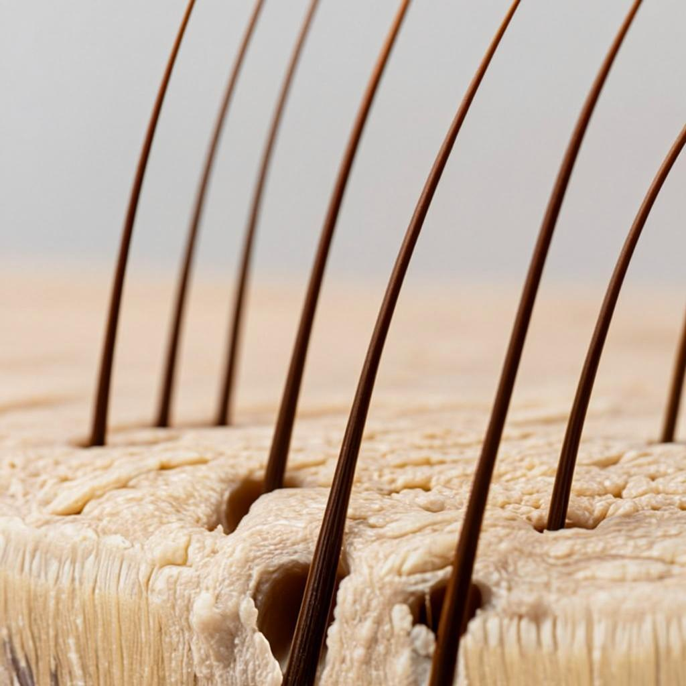

Hair Transplant in Lucknow – Consult Dr. Brajesh Pathak
Looking for a hair transplant consultation in Lucknow? PLASTICOS provides personalised consultations for individuals experiencing hair loss or thinning. Discuss your concerns, donor-area suitability, available techniques, recovery and realistic expectations with Dr. Brajesh Pathak.

Introduction
Hair loss affects a significant number of adults and can result from genetics, hormonal changes, medical conditions, nutritional factors or stress. A hair transplant is a surgical procedure in which hair follicles are moved from an area of healthy hair growth (the donor area, typically the back or sides of the scalp) to areas where hair has thinned or been lost. At PLASTICOS, every hair transplant begins with a detailed consultation to evaluate whether the procedure is suitable for your specific pattern of hair loss, donor-area quality and overall health.
Treatment Overview
A hair transplant involves the relocation of individual follicular units from the donor region to the recipient region. Two commonly discussed techniques are Follicular Unit Transplantation (FUT), in which a strip of donor skin is harvested and follicular units are separated under magnification, and Follicular Unit Extraction (FUE), in which individual follicular units are extracted directly from the donor area using small punches. Each technique has its own indications, advantages and limitations. The choice of technique is discussed during consultation and depends on multiple factors including the extent of hair loss, donor-area density, scalp characteristics and the patient's preferences.
Who May Be Suitable
Suitability for a hair transplant is assessed individually. Generally, candidates may include individuals who:
- Have stable, patterned hair loss with sufficient donor-area density.
- Are in good general health without conditions that may impair healing.
- Have realistic expectations about what the procedure can achieve.
- Have completed adequate medical evaluation for underlying causes of hair loss.
- Are not experiencing active scalp infection, inflammation or uncontrolled dermatological conditions.
Suitability is not determined by age alone. Some individuals may be advised to defer a transplant until hair loss stabilises, or may be recommended alternative or adjunctive options first.
Consultation and Assessment Process
During your consultation at PLASTICOS, Dr. Brajesh Pathak will review your hair loss pattern, donor-area characteristics, medical history, current medications and any previous treatments. The consultation includes a discussion of your goals and expectations, an explanation of the available techniques, and a realistic assessment of what a transplant can and cannot achieve for you. If a hair transplant is considered appropriate, a treatment plan including the estimated number of follicular units, technique, session planning and expected timeline is discussed. If the procedure is not suitable, alternative options or a watchful approach may be recommended.
Procedure Overview
Where a hair transplant is undertaken, the procedure is performed under local anaesthesia. The donor area is prepared and follicular units are harvested using the chosen technique (FUT or FUE). The recipient sites are then created in the area of hair loss at appropriate angles and directions to match natural hair growth, and the harvested follicular units are carefully placed. The duration of the procedure depends on the number of follicular units being transplplemented. Specific procedural details, anaesthesia considerations and session planning are explained by Dr. Brajesh Pathak based on your individual treatment plan.
Recovery Information
Following the procedure, mild swelling, redness and scabbing in the recipient and donor areas are common and typically settle over the following days to weeks. Detailed post-procedure care instructions are provided, including guidance on washing the scalp, sleeping position, activity restrictions and medications. Initial shedding of transplanted hair is common in the weeks following the procedure, with regrowth typically beginning over the following months. Most individuals are able to resume routine activities within a few days, with specific activity restrictions explained during the consultation. Recovery timelines vary between individuals.
Possible Risks and Limitations
As with any surgical procedure, a hair transplant carries potential risks, which may include:
- Bleeding, infection or delayed healing in the donor or recipient areas.
- Scarring — appearance depends on technique and individual healing.
- Temporary shock loss of existing hair in the recipient or surrounding areas.
- Uneven growth, suboptimal density or graft survival below expectation.
- Changes in scalp sensation, usually temporary.
- Need for additional sessions to achieve desired density.
A hair transplant does not prevent the progression of underlying hair loss in non-transplanted areas. Future hair loss may require additional treatment. The final result takes many months to become apparent, and individual outcomes vary. A realistic expectation of results is established during your consultation.
Medical Disclaimer: The information on this page is general in nature and does not constitute medical advice or a guarantee of outcome. Suitability, risks and expected results vary between individuals and must be assessed in a personal consultation with Dr. Brajesh Pathak. Read the full medical disclaimer.